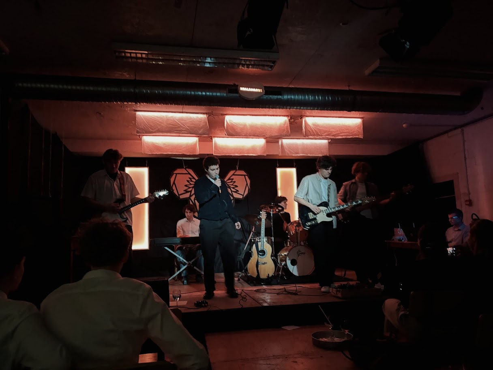
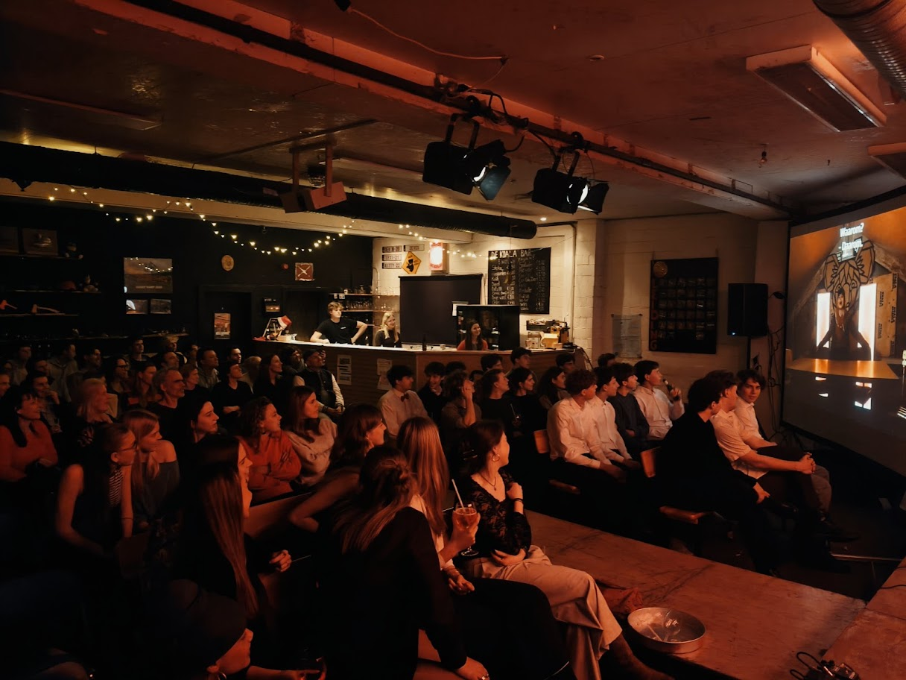
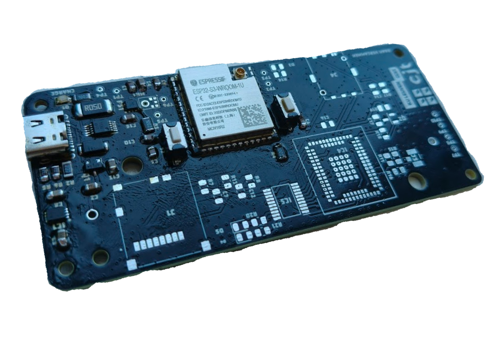
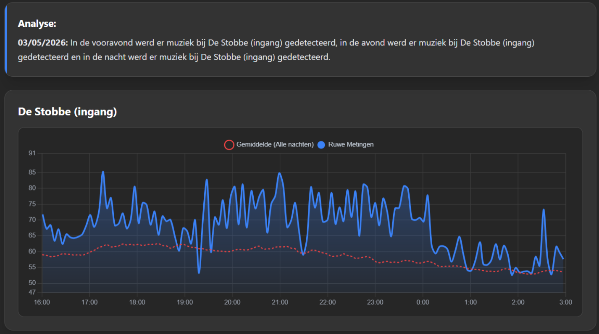
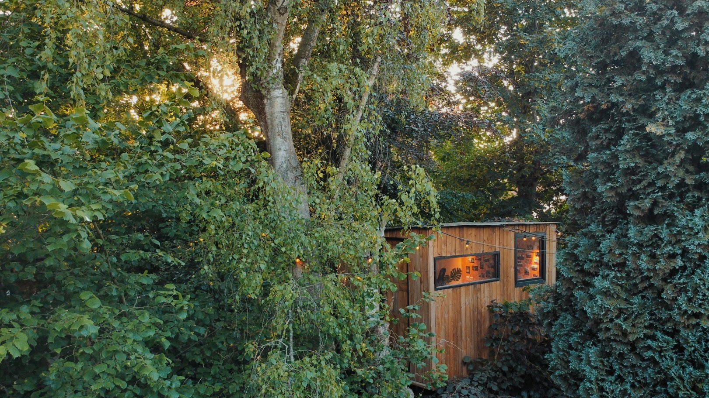
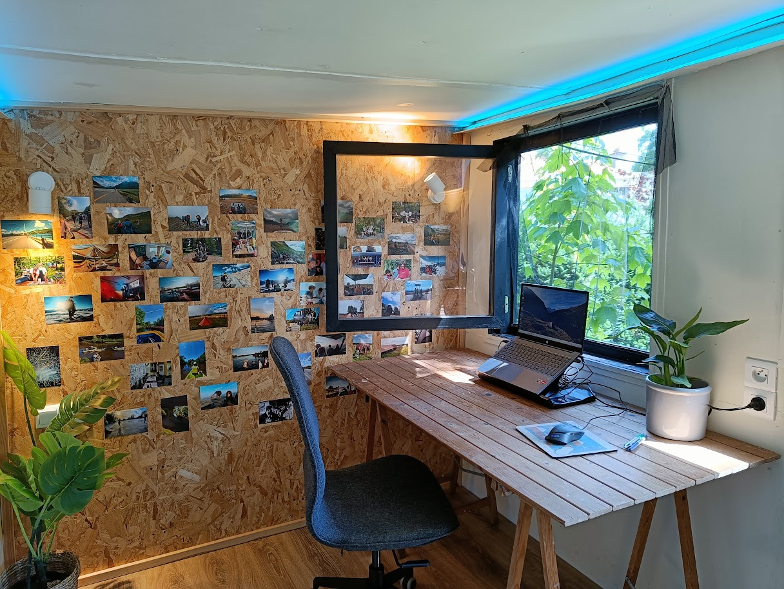
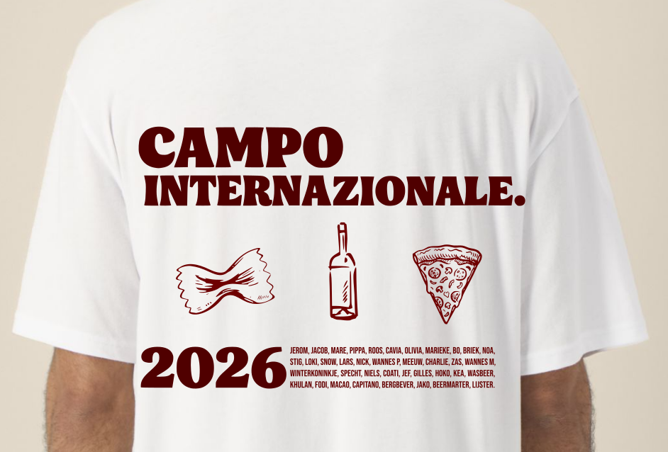
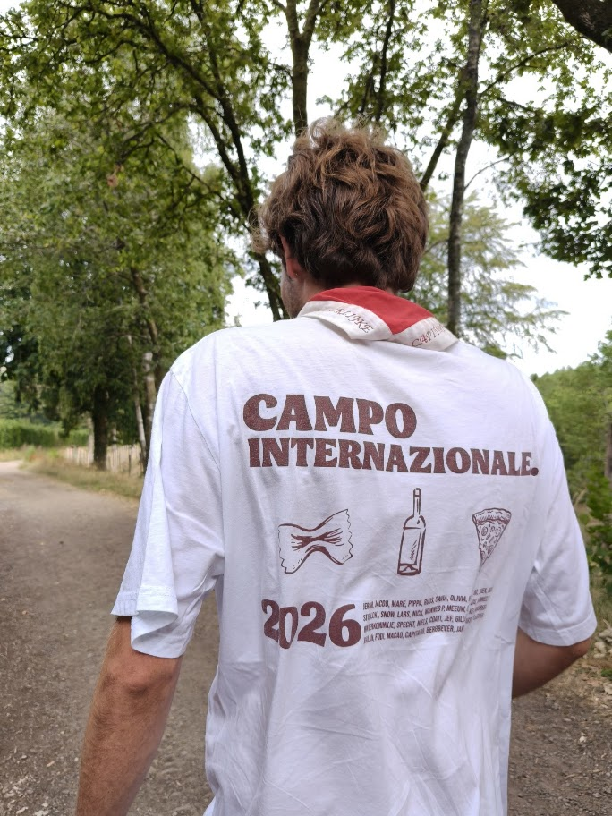

Koalawards

Lichtsturing en audio-installatie
In 2021 startte ik samen met een vriend de Koalawards, een (inmiddels) jaarlijkse awardshow op mijn scouts. Voor dit evenement ontwerp ik de awards, maak ik lampen met eigen besturing (via C++) en installeer ik de volledige geluidsinstallatie (voor de liveband waarbij ik zelf ook gitaar speel).

Presentatie en video
Naast de installatie proberen we vooral de mensen een toffe avond te geven. Dit door een show te presenteren vol met leuke filmpjes en mooie momenten.
Masterproef

Sensorontwikkeling & IoT
Voor mijn masterproef ontwierp en bouwde ik zelfstandig fysieke IoT-sensoren om omgevingsgeluid rond jeugdverblijven accuraat op te meten. Hiervoor ontwierp ik een PCB waarop alle componenten zorgvuldig werden gesoldeerd.

Feedback uitbaters
De verzamelde data worden via algoritmes geclassificeerd aan de hand van frequentiespectra. Op deze manier krijgen de uitbaters een duidelijk overzicht, dat ze via een website kunnen raadplegen.
De Boomhut

Constructie
Tijdens de lockdown ontwierp en bouwde ik een boomhut. Met weinig middelen, geen professionele hulp maar wel veel tijd.

Infrastructuur
De boomhut werd voorzien van de nodige elektrische infrastructuur. Dit maakt het de ideale studielocatie.
Scouts-T-shirts

Grafisch Ontwerp
Creatie van het visuele concept en digitale vectorbestanden voor de T-shirts van ons internationaal scoutskamp.

Project- & Leveranciersbeheer
Naast concepten zorg ik ook voor effectief eindresultaat. Iets dat ik naast deze T-shirts ook verder heb ontwikkeld als hoofdleider.